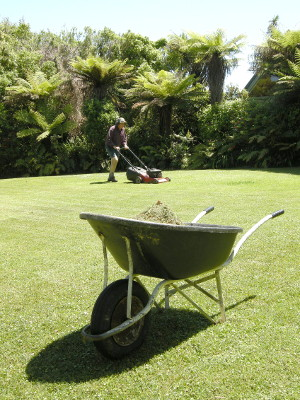
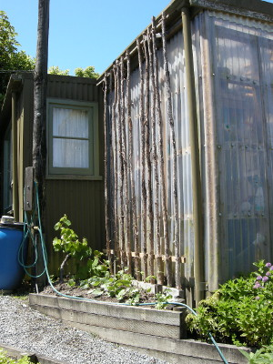
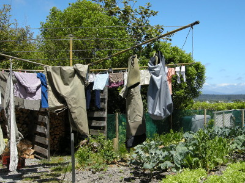
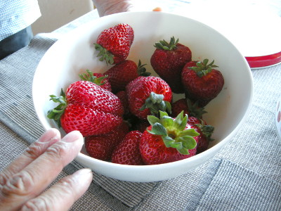
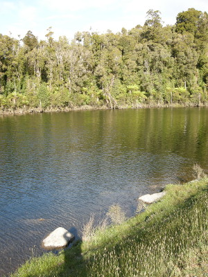

釣行日誌 ＮＺ編 「翡翠、黄金、そして銀塊」
家庭菜園の手伝い、そして湖へ
2010/12/02(THU)-2
さすがに砂利の一粒一粒にワックスがけはしなかったが、芝生の低いところに撒く砂運びは手伝った。

エンジン付きの芝刈り機で黙々と庭を往復していたブリントさんが、午後２時前にエンジンを止めた。今回の釣行の直前、2010年11月19日に起こった、グレイマウス近くの Pike River mine での炭坑事故 で亡くなった29人もの犠牲者の方々を悼む全国一斉の黙祷時間となったのだ。静まりかえった庭に二人で立ち、犠牲者のために黙祷をした。
芝生が綺麗になったので、今度は裏庭に回り、作業小屋の脇に植えられたマメのツルが伸びても大丈夫なように、木の棒を立てた。地面に杭を打って横棒を渡し、そこに棒の根元を縛り付けてゆく。棒の先は小屋の屋根に固定した横棒に結わえた。10本あまりの棒がマメの苗のそばに整然と並んだのを見て、ブリントさんは
「グレースが帰って来てこれを見たらきっと喜ぶぞ」
と言って微笑んだ。

母屋の裏には斜面の段差を利用していくつか野菜畑が設けられており、トロレイ夫妻はここで季節の野菜を手作りしている。畑の他には暖炉用の薪置き場、大型のもの干しポールなどがある。このもの干しポールはニュージーランド（おそらくイギリス・オーストラリアでも）ではポピュラーであり、垂直の支柱から４～６本の腕棒が出ており、それにワイヤーが張ってある。回転式なので、腕棒を回せば、同じ位置に立っていながらポール全体に洗濯物を干すことができるのだ。敷地の広い住宅ならではの装備である。

畑作業の後で少し昼寝をしてから、ネルソンからバスで帰って来るグレースさんを迎えに町のバス停までブリントさんと車で出かけた。定時より少し遅れてバスが到着し、リュックと両手のバッグにお土産をいっぱい詰め込んだグレースさんが降り立った。トヨタの RAV-4 のトランクに荷物を積み込み、家に戻る。彼女がさっそくネルソン産の大粒イチゴを洗い、白いボールに山盛りで出してくれた。

甘いイチゴを何粒も頬張り、紅茶をいただきながら、グレースさんから次男のランス君一家の近況を聞いた。ランス君は、画家の息子らしく、絵画・写真などの額装を生業としており、奥さんと二人の子供と共にネルソンで幸せに暮らしているとのことだった。
さて、時刻は午後４時を回った。これから湖の夕まづめ狙いで、レインボートラウトを釣りに行くこととなった。今日は奥さんのグレースさんもスピニングタックルで参戦するそうで、車に釣り具を積んで三人で乗り込み、いざ出発である。
車で一時間足らずのドライブで着いたその湖には、数年前からフィッシュアンドゲームカウンシルがレインボートラウトとシルバーサーモンの幼魚を放流しているそうである。南島西海岸ではレインボートラウトは珍しいので、貴重な釣り場となっているらしい。湖はこぢんまりとしており、砂利道の走っているこちら岸は足場も良く、日本の管理釣り場のような雰囲気であるが、対岸に広がる原生林はウェストランドならではの光景である。右手奥に沢の流れ込みがあるそうだが、その辺り一帯は水深が浅すぎて見込みが薄いらしく、メインのポイントは中央から左手の深みであるとのこと。

岸辺に立ってワクワクしつつフライを選ぶ。風も無く水面は穏やかだったので、ひょっとしたらドライに出るかもと色気を出して、良く目立つハンピー12番を結び、続けてヒトヒロ分のティペットを継ぎ、ドロッパーのニンフには例のヤツを選択した。ブリントさんは、左手の深みを狙うべくグレースさんと連れだって歩いて行ったので、一人で中央やや右よりのポイント目がけてフライをキャストする。ぽっかり浮かんだハンピーに、ニンフの重さが掛かってティペットが伸びている。少し夕暮れじみてきた初夏の日差しを浴びながら、揺れる水面のハンピーを見ていると、気分はもうひょうたん湖、あるいはすそのフィッシングパークである。（笑）
釣行日誌ＮＺ編 目次へ
サイトマップ
ホームへ
お問い合わせ